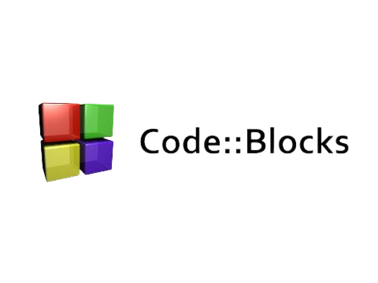

CodeBlocks

CodeBlocks
CodeBlocks — это свободная кроссплатформенная среда, заполняющая нишу между огромными и мощными, но зачастую ресурсоёмкими системами для больших проектов,
вроде Eclipse, Visual Studio, Net Beans, и слабыми по функционалу, но быстрыми блокнотами, на пример Scintilla. Причем преимущества и тех,
и других складываются и позволяют использовать данную систему как для написания небольших проектов для встраиваемых приложений, так и для программирования приложений для РС.
Из плюсов, платформа содержит:
Бесплатность. Полноценный open-source проект;
Простота. В отличие от Visual Studio, среда Code::Blocks понятна новичку, знающему один из поддерживаемых языков;
Кроссплатформенность. IDE запускается на любой десктопной ОС;
Выбор компилятора. Code::Blocks ограничена в функциональности, но эта возможность — несомненный плюс.
Бесплатность. Это open-source проект, абсолютно бесплатный.
Легковесность.
Из минусов можно выделить:
Недостаточная функциональность. Для создания комплексных приложений Code::Blocks категорически не подходит.
Нестабильность. Приходится сталкиваться с нелепыми ошибками в отладке и некорректной работой всей среды.
Поддерживаемые платформы:
Windows/macOS/LinuxOS
Официальный сайт для скачивания